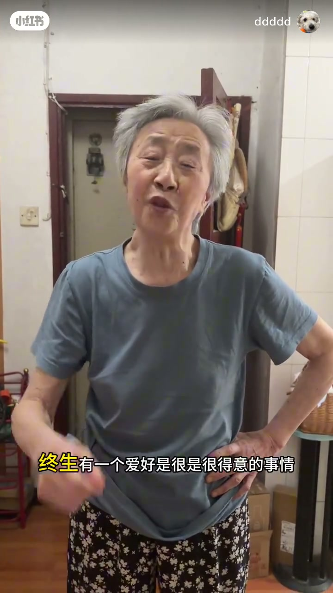
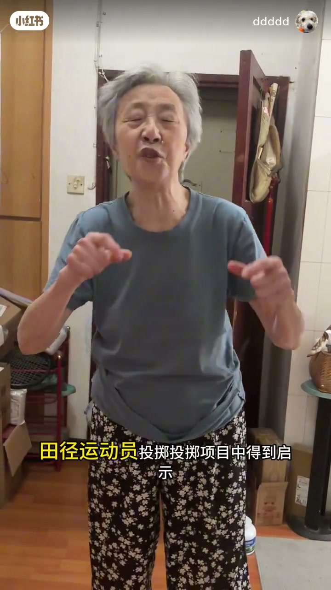
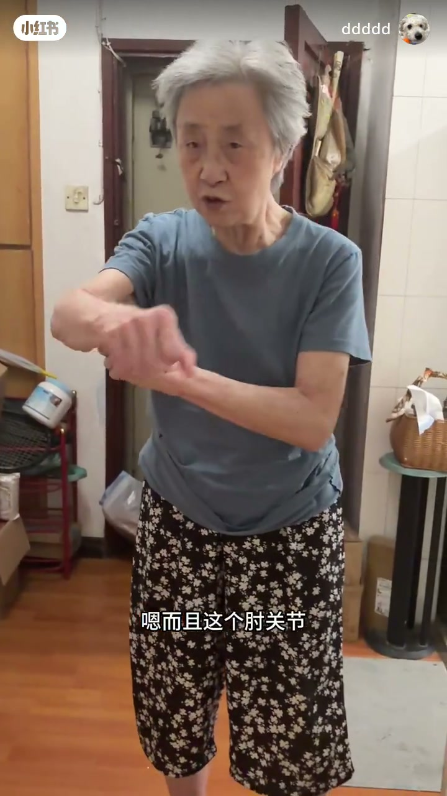
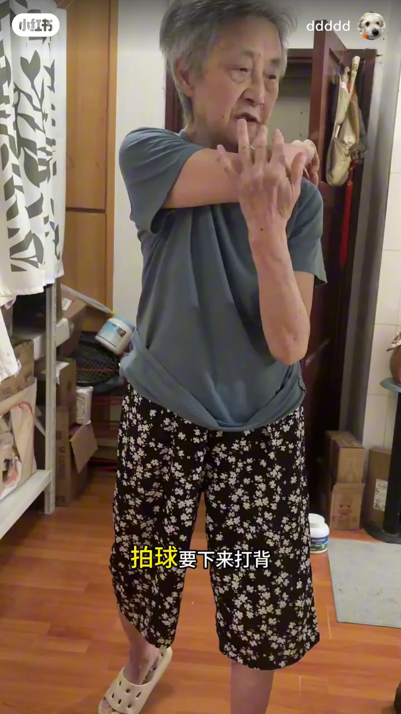
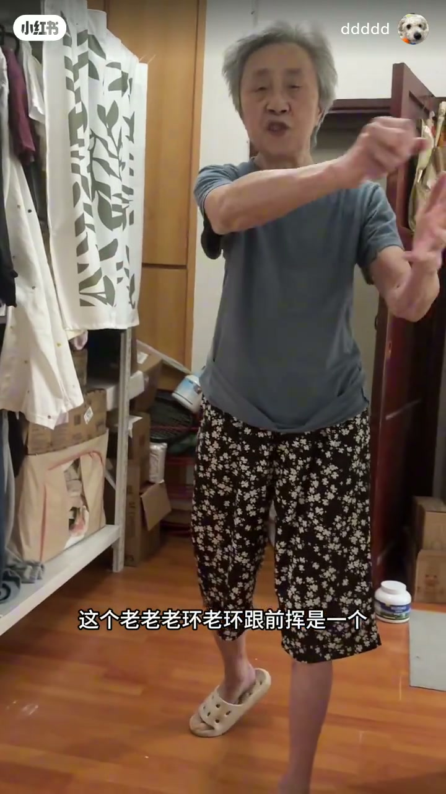
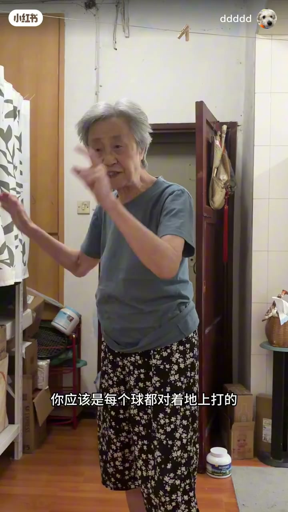
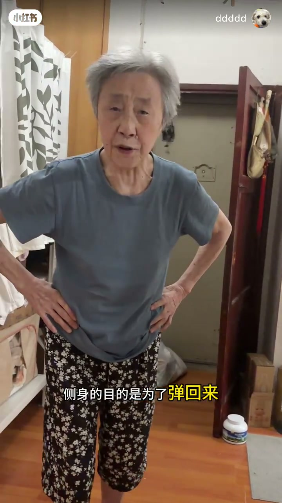

内容要点
账号「ddddd」拍下 84 岁健将级网球奶奶在家中教正拍。笔记说明前约 50 秒是祝福，之后进入讲解。口播强调：旧劳力打法身体不动、后肩不出；现在后肩一定要出来，肘关节要打开带动，挥拍要够长，动作应是全身的。Whisper 噪声大、有重复与误识（如「天津」或为其他项目转项），技术要点以可读句与动作画面为准。
知识结构
开场问候与催更寒暄，非正式技术段。
其他项目教练转网球，可用共通发力道理入门。
旧打法肩不出；现在后肩要出来，肘关节打开像环节带动。
别太快、别撑死；挥拍要够长，才能打到对手深处。
人摊回来再送出去，转体带气势，力量来自全身。
正拍不是手臂局部甩拍：后肩出来、肘关节打开、轨迹够长、全身转送。属现场口授示范，细节需结合教练纠正。
00:00-02:30祝福之后，进入正拍
片头是催更与祝福寒暄。随即提到不少运动员/教练从其他项目转来，虽未必科班网球，但可通过共通运动道理理解发力。旁人笑她「理论太多」，她坚持先说明意义。


02:00-06:00后肩出来，肘关节打开
对比旧劳力打法：身体不动、肩膀带不出来；现在要求后肩一定要出来。肘关节被反复强调——像环节打开，打开了才有「巨大」空间；同时提醒别动作太快、别又撑死在某处。
挥拍轨迹要够长：打到对方深处需要长度；火力/力量讲起来简单，但动作应该是全身的。她边说边在客厅比划肘部与前挥。



06:00-08:31转送回收，气势来自全身
后段示范「人摊回来、再送过去」的往复，并提到转体带来的气势。结尾在笑声里收住：转过去、别闷在里头——把正拍从手臂动作拉回全身协调。


完整转录（20段）
以下文本由 Whisper medium 模型自动转录，可能存在少量识别误差，已尽可能修正。
他们要催他们更新视频了
是一个是是是是是是是是是是是
就是身体内内内内内内内内内内内内内内内内内内
很多运动员很多教练员是从天津项目转向的
他不懂网球但是他通过那个
天津的一些一些共同的道理
你先讲嘛你讲嘛嗯太多太多理论了不我这个主要说明他呢他也要的意义啊啊很专业很专业
哎哎所以说我们呃以前的劳力大法是身体不动的身体不打动这个肩没有出来
现在这个后肩一定要出来
而且这个走关节走关节非常重要走关节就好比泡泡洗泡泡洗关节
他这地这地这地这地打开这地打开你才是你巨大的你有到这你有到这你不要那么多
我说你又到这不要动作那么快还是又撑了去了哎
啊
必须要有那么长,
我说你这个动作就是在你底下,你需要打到对方底下,需要那么长,
需要那么长,需要那么长,你火力简单说来就好,所以说你动作应该是全身的,全身的。
你看看那个力量应该是很大,你看看那个,人摊回来,采摘过去,人摊回来。
你看看那个天津的那个铁壁,那个铁壁。
哦,转过去,哎,好,你不要在那里头,好,好,好,都会得到气势的。
啊,哈哈哈哈。